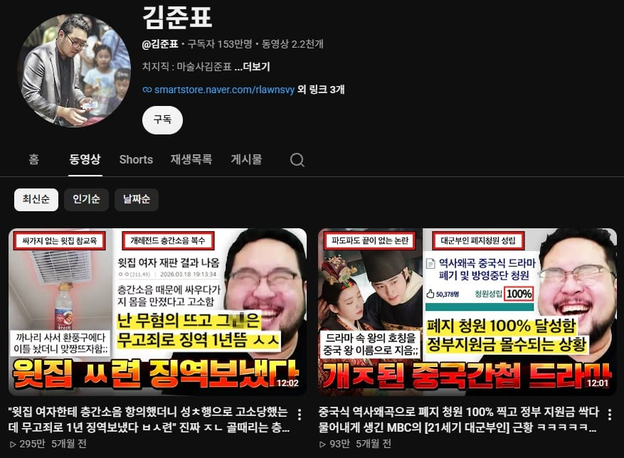

꿀통 부숴졌노


와 영상 400개 빼고 다 날렸네
저작권 철퇴빔 맞았네.. 근데 사실 준표햄 살려주는건 저질 복제 양산형 쇼츠 채널에 면죄부 주는 꼴이라 어쩔 수 없긴 함. 빨대 꽂는 채널은 죽어야제
커뮤읽기는 방송인이 그냥 시간때울려고 하는게 대부분인데 그걸 주력으로 하는순간 예정된 결과긴 했지 ㅋㅋ
궁금한게 있는데, 만약 만든 사람이 승희면 합법임?
승희가 저작권 신고로 내릴수 있는 권리가 있는거지 허가 안 받은건 일단 똑같은거지 걍 저작권 범위 ㅈㄴ 넓음 근데 그냥 신고해봤자 이득 없으니까 버려두는거임 다들
ㄴㄴ 승희가 렉카들 월급주는 이유가 있음
어차피 영상수익 다 받아서 지우는거라 뭐...

삭제가 아니라 숨김처리
아 저런